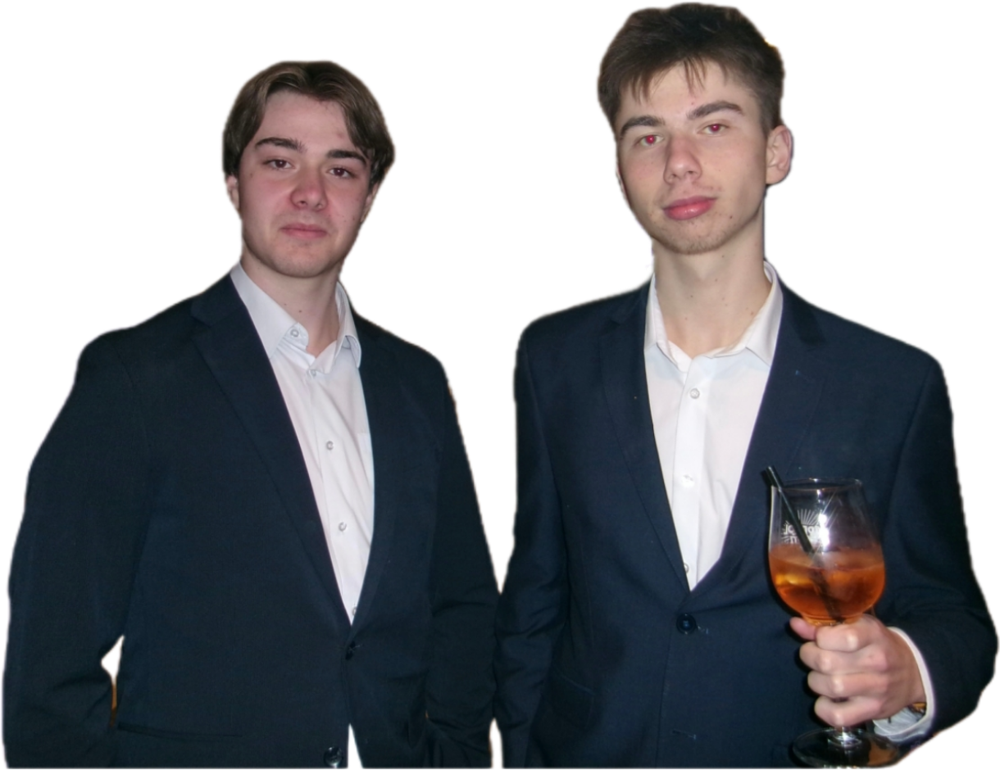
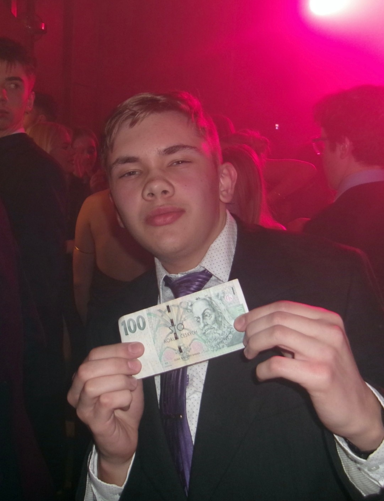

Maturitní ples třídy O8 a 4.A – Propadák nebo náprava?


Předešlý maturitní ples tříd 4.B a 4.C nenastavil laťku příliš vysoko. Byl zábavný a osobně jsem si ho užil, ale rozhodně nelze říct, že by byl na úrovni, kterou by člověk od maturitního plesu očekával. Maturanti nepili jen v zákulisí, ale dokonce i na nástupech, což nepůsobilo zrovna reprezentativně. Místo slavnostního dojmu to občas připomínalo spíše běžnou páteční zábavu. Nebyli však jediní, kdo ten večer pili. Mladší studenti gymnázia, kteří se přišli na maturitní ples podívat, dopadli ještě hůře. Někteří zřejmě přecenili své limity. Kromě pozvracených stolů a umyvadel na záchodech se dokonce musela i několikrát volat sanitka, což kazilo pověst celé akce. Stěžoval si i majitel domu kultury. Není divu, že se ples stal hlavním tématem následujícího týdne pro všechny učitele.
Oproti předešlému plesu byl ples tříd O8 a 4.A velice na úrovni, také měl co napravovat. Sám jsem nezaznamenal nic pozvraceného ani nikoho válejícího se na zemi. Na nástupech také nic s alkoholem neproběhlo, což výrazně přispělo k lepšímu dojmu. Maturitní ples proběhl naprosto bez problémů a bez volání sanitky, což samo o sobě o něčem svědčí . Neslyšel jsem ani, že by si učitelé stěžovali nebo že by jim něco vadilo. Sice jsem sám žádné učitele nepotkal, ale údajně si to užili a bavili se, což je u podobných akcí také důležité. Osobně jsem si více užil ples třídy O8 a 4.A kvůli jeho celkové atmosféře. V malém sále to žilo téměř po celou dobu.
Svou roli sehrály i další okolnosti, jako například balení holek nejmenovaným žákem 2.B, který předvedl naprosto skvělý výkon. Nejen že se dostal tak daleko, jako je chycení holky kolem ramen, ale dokonce se s tou holkou i do teď baví, což lze bez nadsázky označit za jeden z nejvíce nečekaných úspěchů večera.
Velkou energii předvedli také žáci 1.B, kteří byli snad nejaktivnější skupinou na parketu. Tancovali bez přestávky a bylo vidět, že si ples opravdu užívají naplno. Takovou dávku energie jsem už dlouho neviděl. Alkohol mezi návštěvníky plesu samozřejmě nechyběl, ale ve správné míře jen pomohl k větší zábavě a prožitku, a nikoli k pozvraceným stolům, což byl oproti minulému plesu zásadní rozdíl. Na závěr bych chtěl jen říct, že to propadák opravdu nebyl a žáci O8 a 4.A naopak napravili reputaci gymnázia před majitelem domu kultury a před našimi učiteli.
Článek zpracoval: Jan Vladimír Procházka
Březen 2026ZDROJE